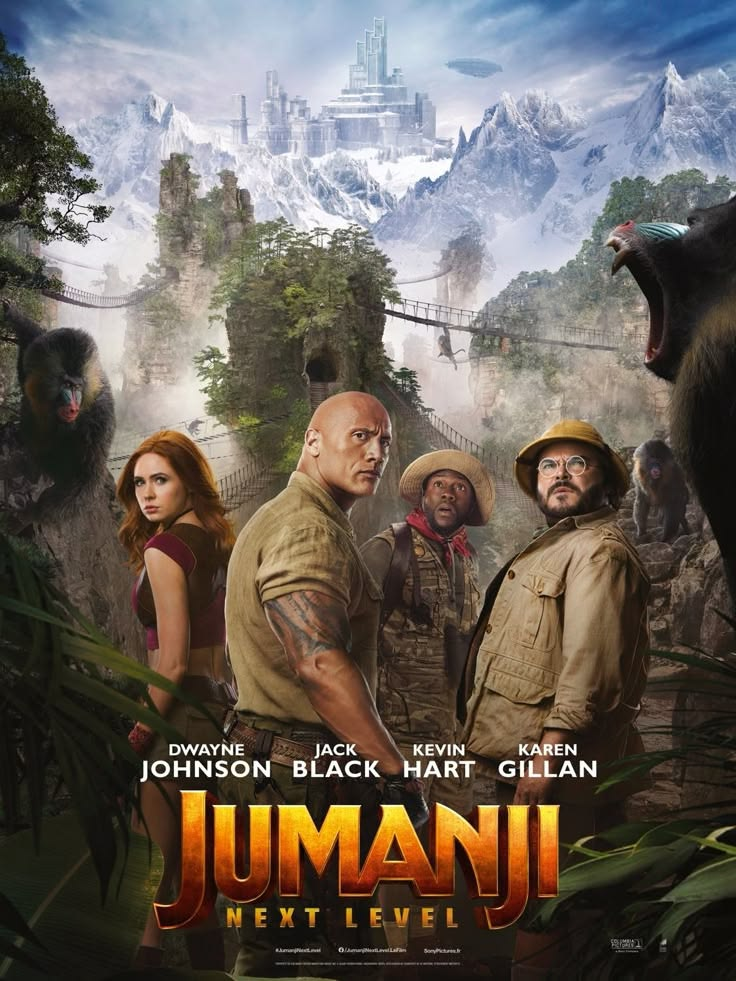
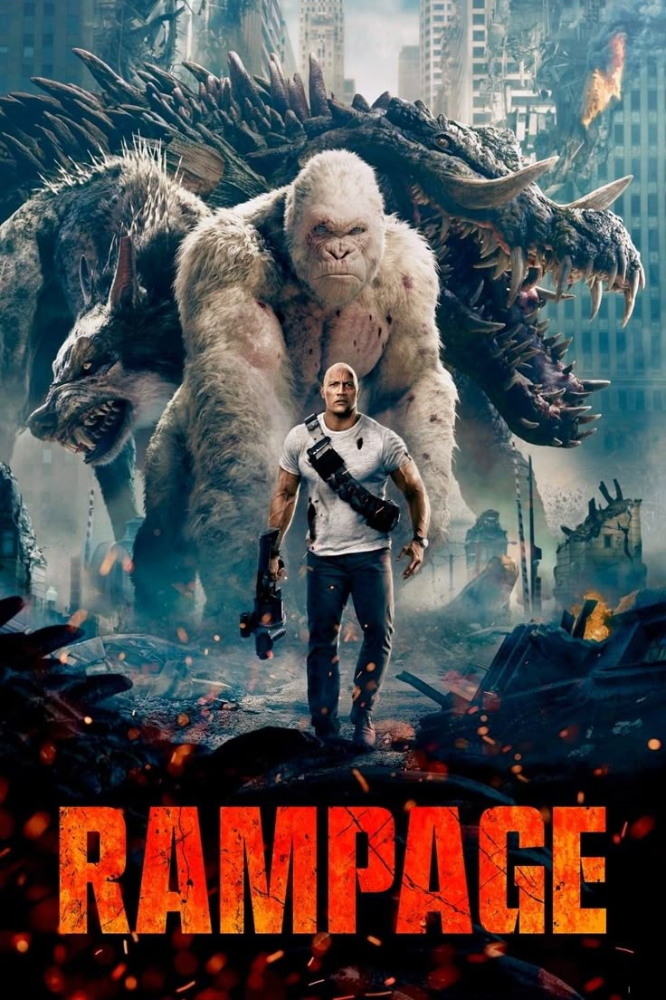
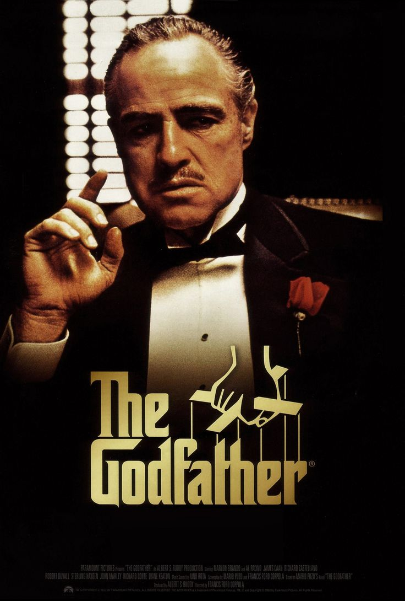
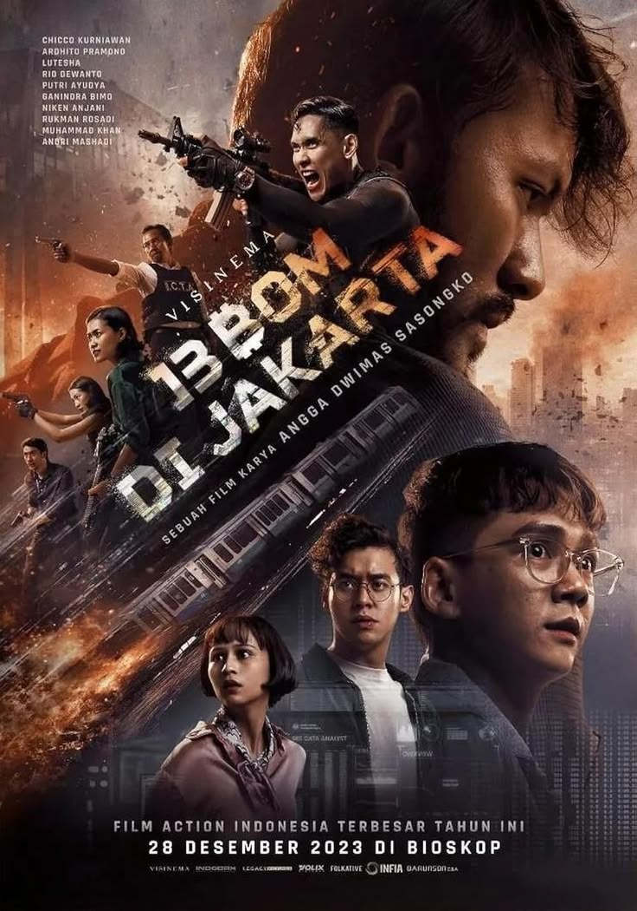
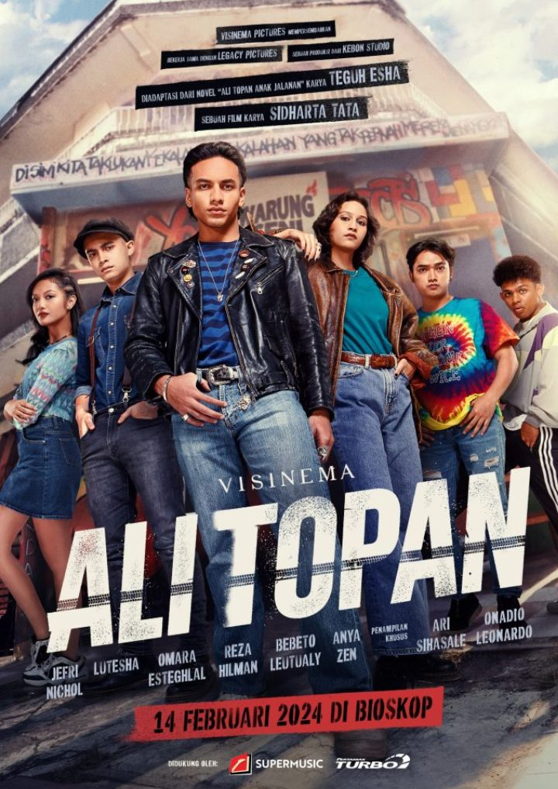

Selamat datang di website nonton film-film terbaru tahun 2026
Daftar film-film terbaru tahun 2026
Sedang tayang

JUMANJI
Spencer merasa rindu dengan rasa percaya diri saat ia menjadi avatar Dr. Bravestone , lalu diam-diam masuk kembali ke dalam video game Jumanji. Teman-temannya (Martha, Fridge, dan Bethany) terpaksa menyusul masuk untuk menyelamatkannya. Namun, sistem konsol yang rusak membuat karakter mereka tertukar; kakek Spencer (Eddie) dan rekan bisnisnya (Milo) ikut terseret ke dalam kekacauan permainan. Mereka harus merebut kembali "Permata Elang" dari penjahat sambil beradaptasi dengan tubuh avatar baru

PEAKY BLINDERS
Ambisi Tommy untuk memperluas kekuasaan dan melegalkan bisnis keluarganya membuatnya berbenturan dengan berbagai pihak, mulai dari kepolisian (seperti Mayor Chester Campbell), geng saingan, mafia, kelompok komunis, hingga intrik politik tingkat tinggi (termasuk ancaman fasisme di Eropa menjelang Perang Dunia II)

RAMPAGE
Ketiga hewan raksasa tersebut menuju ke kota Chicago dan mulai menghancurkan kota. Davis bekerja sama dengan ahli genetik Dr. Kate Caldwell dan agen pemerintah Harvey Russell untuk menemukan penawar racun serta menyelamatkan George sebelum militer menghancurkan para monster tersebut

SPIDER-MAN
Peter sekarang hidup sepenuhnya sendirian dan mendedikasikan seluruh waktunya sebagai pahlawan jalanan New York City tanpa dukungan teman-teman lamanya (termasuk Michelle "MJ" Jones-Watson dan Ned Leeds). Ia juga sesekali memantau kehidupan mereka dari jauh.

THE GOD FATHER
Cerita dimulai pada acara pernikahan Connie. Don Vito menolak tawaran kerja sama dalam bisnis narkoba dari gembong mafia saingan, Solozzo. Penolakan ini memicu percobaan pembunuhan terhadap Don Vito, yang membuatnya terluka parah.

TRAIN TO BUSAN
Cerita bermula ketika sebuah truk pengangkut melewati kawasan yang mengalami kebocoran zat misterius. Truk tersebut tidak sengaja menabrak seekor rusa; rusa yang awalnya mati itu tiba-tiba bangkit kembali dengan mata yang aneh. Tanpa disadari, wabah tersebut mulai menyebar luas di Korea.

13 BOM DI JAKARTA
Jakarta diguncang oleh teror sekelompok penjahat pimpinan Arok (Rio Dewanto) yang menyebar 13 bom di berbagai titik vital dan pusat keramaian ibu kota.

ALI TOPAN
Mengisahkan petualangan seorang pemuda pemberontak bernama Ali Topan (Jefri Nichol) yang tumbuh dari keluarga berantakan (broken home) dan menghabiskan kesehariannya di jalanan Blok M serta Warung Seni bersama komunitasnya di bawah asuhan Opung Brotpang (Ari Sihasale).

GHOST WRITER 2
Cerita bermula setelah kesuksesan besar novel kedua Naya (Tatjana Saphira) yang membuatnya menjadi seorang penulis bestseller. Namun, kepopuleran ini membawa dampak buruk: publik lebih mencap Naya sebagai seorang cenayang atau dukun pencari sensasi ketimbang seorang penulis profesional.

KEADILAN (THE VERDICT)
Raka (Rio Dewanto) adalah seorang petugas keamanan (security) pengadilan yang jujur dan idealis. Ia dan istrinya, Nina (Niken Anjani) — seorang pengacara muda yang sedang hamil — hidup penuh kebahagiaan ketika Nina baru saja merayakan kelulusan ujian advokatnya.
ZONA MERAH
Serial web Indonesia bergenre laga dan cerita seru (thriller) yang tayang perdana di Vidio pada 8 November hingga 20 Desember 2024 (8 episode). Serial ini juga akan diangkat ke layar lebar dengan jadwal rilis bioskop pada 14 Januari 2027.

PARA PERASUK
Berpusat di Desa Latas, sebuah desa fiktif yang menjadikan tradisi "pesta kerasukan" (disebut pesta sambetan) sebagai bagian dari budaya, hiburan, sekaligus cara warga menyembuhkan diri atau melarikan diri dari tekanan hidup.